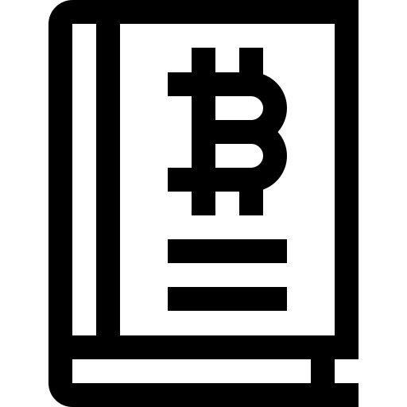
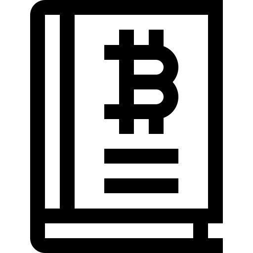
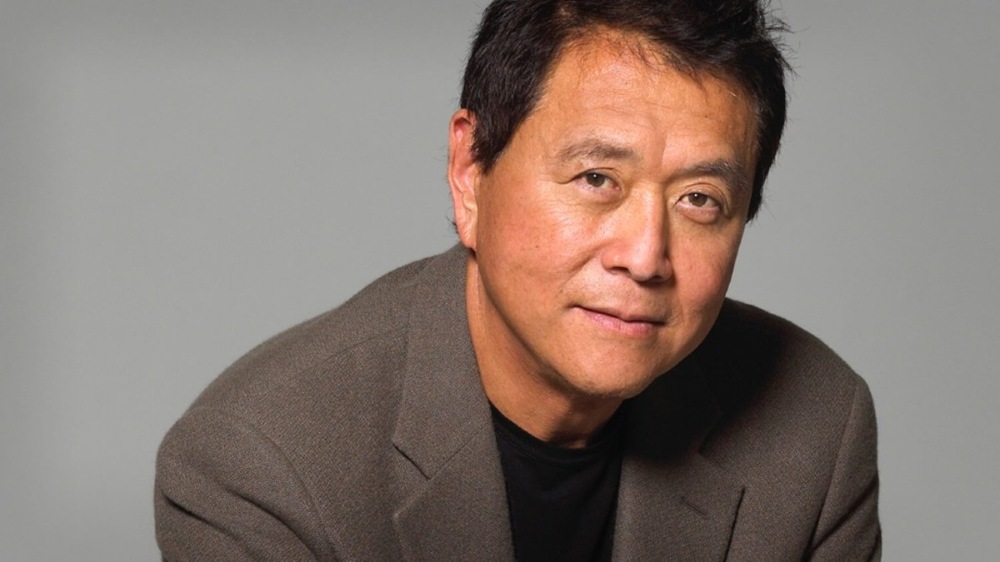

Para ver el libro.
Para ver el libro.
Descripción
El libro cuenta las enseñanzas de los “2 padres” del autor, el biológico que es un profesor que defiende el sistema de estudia, trabaja, trabaja más y llegarás algo, y el padre de un amigo que le instruye en el arte de poner el dinero a trabajar para ti. Sobre esto gira básicamente el libro, la dualidad entre trabajar por dinero o que el dinero trabaje por ti. El supuesto padre de su amigo es un hombre sin estudios pero con las ideas muy claras sobre el dinero, su padre real sigue el esquema típico occidental de estudios, trabajo, hipoteca… Analizar este libro objetivamente es algo muy complejo para mí, primero porque habla de ciertas formas de conseguir dinero que o bien pueden ser ilegales o bien no son aplicables en España por ejemplo, además de que mis conocimientos sobre finanzas son limitados.
No es una guía para hacerte rico sino una filosofía financiera
Quién se espere un guía paso a paso sobre como volverse rico, ya puede seguir buscando, porque el libro más que una guía de finanzas vendría a ser un libro de autoayuda. Esto para mí no es una crítica pero conviene saber que nos vamos a encontrar para no llevarse decepciones. El cashflow es fácil de entender, y más para los que ya nos hemos peleado con la tesorería de una empresa, y es el camino que sigue el dinero desde que se ingresa hasta que se gasta.
Rozando algunos límites éticos
Kiyosaki explica sin tapujos sus prácticas especulativas, comprando y vendiendo casas a veces en el mismo día, y utilizando el dinero para seguir comprando más casas. Aquí no se podría hacer tan alegremente porque te crujirían a impuestos. También habla bastante sobre impuestos y como los pobres pagan muchos mientras que los ricos se escudan en sociedades y otras “triquiñuelas” para minimizar su pago.
Capitulos del libro:
- El dinero
- La relacion con el dinero
- Como aprender a vivir
- Todo lo que no sabias del Dinero
- Estrategias para invertir
Robert Kiyosaki:
Robert Toru Kiyosaki (Hilo, Hawái, 8 de abril de 1947) es un empresario, inversor, escritor, conferencista y orador motivacional estadounidense de ascendencia japonesa. Es el fundador, consejero delegado y accionista mayoritario de Cashflow Technologies, corporación poseedora de las licencias para la marca Padre Rico Padre Pobre. Igualmente es el escritor de un total de 20 libros, pertenecientes a dicha marca, varios de ellos en coautoría con personalidades como Sharon L. Lechter y Donald Trump. Se afirma que tenía grandes metas y sueños pero no los pudo lograr; esto fue muy frustrante para él pero con resiliencia y pie de lucha salió adelante.
- Inversor
- Empresario
- Escritor
Fecha de nacimiento Nacionalidad Hijos 8 de abril 1947 Estadounidense - Japonés 0
